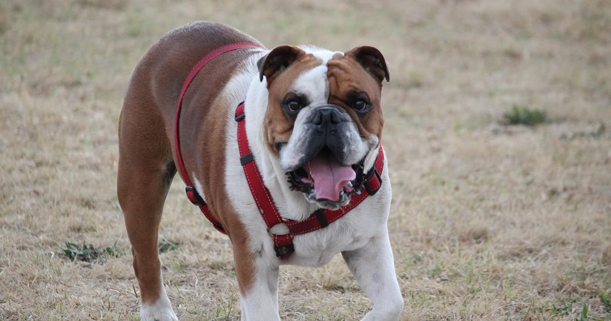

A maioria das reclamações sobre coleira GPS não vem de defeito de fábrica, mas de expectativa mal calibrada ou uso incorreto do dispositivo. Reunimos aqui os erros mais citados por usuários reais, para quem já comprou (ou está pensando em comprar) evitar dor de cabeça.
Um dos problemas mais relatados é a bateria durar apenas um dia quando o modo de rastreamento rápido está ativo — o app deve notificar quando a carga está acabando, mas nem todo usuário fica satisfeito com esse aviso (relatos compilados por SecSystem, retrieved 2026-08-22). O erro é não ajustar a frequência de atualização conforme a necessidade real — se o pet raramente sai de perto, um modo mais econômico já resolve.
Em modo econômico, a atualização de posição pode levar até 10 minutos — isso não é falha, é a configuração de bateria escolhida (mesma fonte SecSystem citada acima, retrieved 2026-08-22). Se seu cenário exige resposta rápida (cão que foge com frequência), vale mudar para o modo de rastreamento rápido mesmo sacrificando autonomia.
entenda como funciona a coleira GPS
Um GPS com chip de operadora só envia dados se houver sinal de celular naquele ponto — em área rural muito isolada, isso é um problema real, não um defeito do produto (SecSystem, retrieved 2026-08-22). Antes de comprar, é importante verificar a cobertura de rede da sua região.
Confiar no recurso sem testar previamente é um erro recorrente — o alerta pode não disparar por notificação desativada no celular, sinal instável no momento, ou perímetro mal desenhado no mapa.
veja como configurar corretamente a cerca virtual
Um dispositivo pensado para cães grandes pode incomodar ou até machucar um cão pequeno. Vale checar o peso do dispositivo isoladamente na ficha técnica do anúncio antes de comprar.
evite esse erro ao comprar para cães pequenos
Existem relatos de coleiras que pararam de funcionar após poucos meses de uso e de dificuldade de suporte/devolução em alguns fabricantes (Reclame Aqui, retrieved 2026-08-22). Vale conferir o histórico de avaliações do vendedor específico, não só o modelo do produto.
A maioria dos problemas com coleira GPS não é sobre a tecnologia falhar, mas sobre expectativa desalinhada com o que ela realmente entrega — cobertura de sinal, velocidade de atualização e autonomia de bateria dependem de configuração e ambiente, não são garantias absolutas. Testar a cerca virtual, ajustar o modo de rastreamento à sua rotina e checar o peso do dispositivo antes de comprar evita a maior parte das frustrações relatadas.
volte ao guia completo de coleira GPS para pet
Escrito pela Equipe Smart Pet Gadgets, redação especializada em comparativos de produtos pet no mercado brasileiro. Veja nossa política editorial e como verificamos as fontes citadas neste artigo.
🐾 Confira o preço e a disponibilidade atual no Mercado Livre.
Ver no Mercado Livre →Link de afiliado: podemos receber uma comissão por compras feitas através deste link, sem custo adicional para você.
Nildo Alves — curadoria de produtos pet no Smart Pet Gadgets. Testa e pesquisa produtos para cães e gatos, cruzando especificações de fabricante com boas práticas veterinárias e dados de mercado.
Sobre o Smart Pet Gadgets · Contato · Política editorial e de afiliados